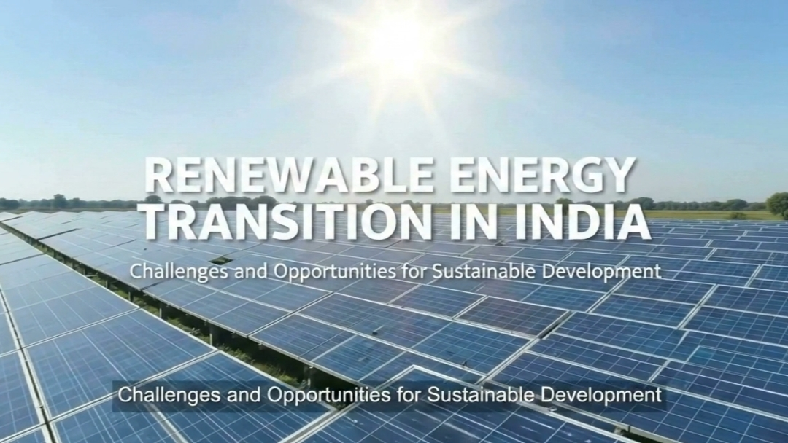
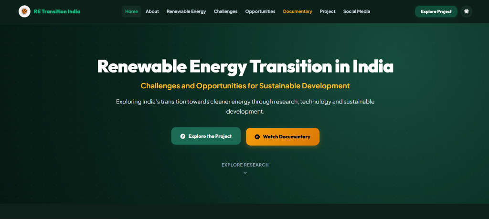
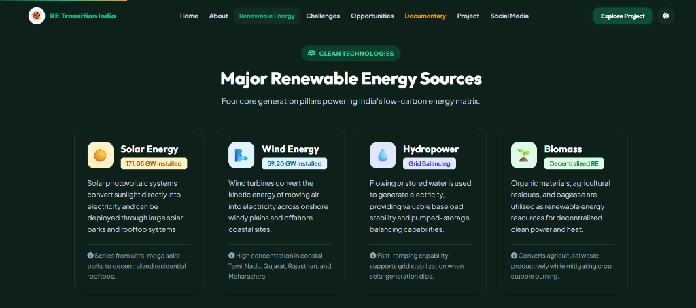
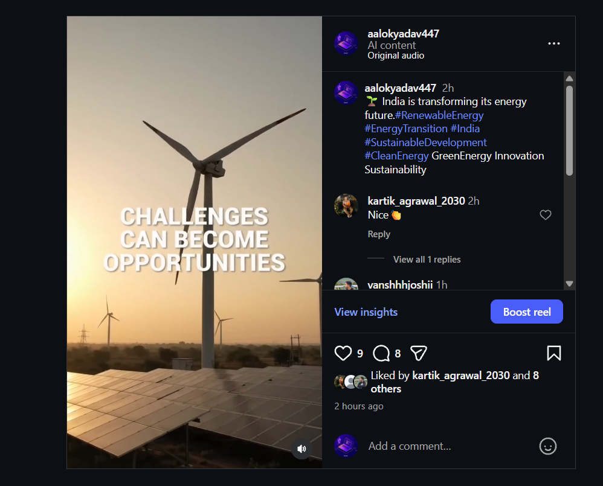

Renewable Energy Transition in India
Challenges and Opportunities for Sustainable Development
Exploring India's transition towards cleaner energy through research, technology and sustainable development.
Explore ResearchWhy Renewable Energy Matters
Energy is essential for India's economic growth and human development, but increasing dependence on fossil fuels creates critical environmental and energy-security challenges.
India is the world's third-largest energy consumer. While coal, petroleum, and natural gas have historically fueled industrialization, their combustion produces significant greenhouse gas emissions and urban air pollution. The renewable energy transition provides a cleaner alternative derived from naturally replenishing resources—curbing carbon emissions while ensuring long-term national energy sovereignty and sustainable development.
Solar Energy
Harnessing direct sunlight through photovoltaic cells and large-scale solar parks to generate clean electricity.
Wind Energy
Converting kinetic air motion into electric power utilizing onshore and offshore aerodynamic wind turbines.
Hydropower
Utilizing the kinetic energy of flowing or stored reservoir water to supply reliable baseload and grid flexibility.
Biomass
Converting organic agricultural residue, bagasse, and sustainable organic materials into bio-power and heat.
India's Renewable Energy at a Glance
Key figures documenting India's rapid clean energy expansion, sourced from MNRE and IEA.
Total installed renewable-energy capacity across India (as of 30 September 2026).
Installed solar photovoltaic capacity, leading national clean energy deployment.
Installed wind energy generation capacity across high-potential coastal and desert corridors.
Power-sector investment directed towards clean energy in 2024.
Major Renewable Energy Sources
Four core generation pillars powering India's low-carbon energy matrix.
Solar Energy
171.05 GW InstalledSolar photovoltaic systems convert sunlight directly into electricity and can be deployed through large solar parks and rooftop systems.
Wind Energy
59.20 GW InstalledWind turbines convert the kinetic energy of moving air into electricity across onshore windy plains and offshore coastal sites.
Hydropower
Grid BalancingFlowing or stored water is used to generate electricity, providing valuable baseload stability and pumped-storage balancing capabilities.
Biomass
Decentralized REOrganic materials, agricultural residues, and bagasse are utilized as renewable energy resources for decentralized clean power and heat.
The Energy Transition
A structured visual progression from fossil dependence to a resilient, low-carbon energy ecosystem.
Conventional Energy
- Coal Power Generation
- Petroleum Fuel Reliance
- Natural Gas Combustion
Finite fuels, high greenhouse emissions, and urban pollution.
Clean Energy Transition
- Renewable Energy Expansion
- Battery & Pumped Storage
- Modern Grid Transmission
- Capital & Technology Investment
Modernizing power infrastructure and balancing intermittency.
Sustainable Energy System
- Cleaner Air & Decarbonization
- Long-Term Energy Security
- Sustainable Development & Jobs
Equitable, self-reliant, Net-Zero clean growth.
Challenges of India's Renewable Energy Transition
Click any card to inspect the structural challenges and technical considerations identified in the research.
Variable Generation
Solar and wind generation depend on sunlight and weather conditions, causing fluctuations in power output.
Energy Storage
Storage is required to balance renewable generation and electricity demand across day and night cycles.
Transmission Infrastructure
Renewable resources are not always located near areas with high electricity demand, requiring long-distance transmission.
Financing
High financing costs can affect renewable-energy projects due to upfront capital expenditures.
Land & Environment
Large projects require land and can create environmental and social considerations that require careful management.
Distribution Companies
The financial condition of electricity distribution companies (DISCOMs) can influence investment and timely power payments.
Opportunities for Sustainable Development
Accelerating clean energy strengthens economic growth, technological self-reliance, and public health.
Energy Security
Diversifying into domestic solar and wind reduces exposure to volatile international fossil fuel markets and geopolitical supply risks.
Reduced Fossil Dependence
Curtailing coal and crude oil consumption saves vital foreign exchange and curtails hazardous urban air pollution.
Clean Technology
Catalyzes research and industrial innovation in green hydrogen, advanced battery storage, smart grids, and electric mobility.
Employment Generation
Creates diverse green jobs in equipment manufacturing, installation engineering, maintenance, and distribution across urban and rural India.
Domestic Manufacturing
Incentivizes indigenous manufacturing of solar cells, modules, and wind turbines under national Make-in-India and PLI initiatives.
Environmental Protection
Substantially reduces carbon footprint and water usage compared to thermal power, mitigating climate vulnerability and preserving biodiversity.
“The renewable energy transition is not only an environmental necessity it is also an opportunity for India's economic and technological development.”
Watch the Documentary
An original research-based educational video documentary presenting the key findings, challenges, and opportunities of India's clean energy transition.

From Research to Digital Product
How the educational research was systematically structured, digitized, and published.
Research
Study reliable information and data about India's renewable-energy transition from official sources (MNRE, IEA, IRENA).
Content Development
Organise the research into educational and understandable content structured into challenges, opportunities, and policy data.
Digital Development
Create the website and documentary using modern digital tools and AI-supported workflows for seamless presentation.
Awareness
Promote the project through social-media content, promotional video reels, and interactive educational features.
Project Evidence
Visual evidence and production artifacts submitted for academic evaluation. Click any item to view in full resolution.

Project Website

Main Information Section

Documentary

Social Media Promotional Reel

Promotional Reel Cover
QR Documentary
Report Archive
A page-by-page preview of the CA1 report, alongside the downloadable DOCX version.

Conclusion
India's renewable energy transition is both a challenge and an opportunity. Solar and wind capacity are expanding rapidly, but successful integration requires energy storage, stronger transmission infrastructure, investment, technological innovation and responsible environmental planning.
“A cleaner energy future requires technology, investment, awareness and collective action.”
References
Official institutional sources and reports cited throughout the research.
Social Media Coverage
Promoting renewable energy awareness beyond the classroom through engaging short form video.
Short promotional videos/reels were created to increase awareness about renewable energy and encourage viewers to explore the complete project.
Figures were recorded manually from the Instagram post and may have changed since. Open the reel on Instagram for the current numbers.